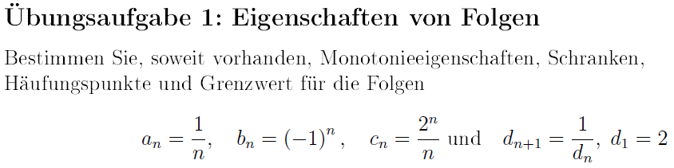
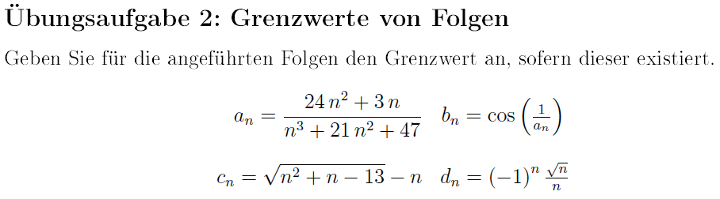

3. Übungsblatt Mathemathik I für ChemikerInnen
Die Übungsaufgaben sind dazu gedaht, Ihnen zu zeigen, wie die
Methoden, die in der Vorlesung vorgestellt wurden, in Anwendung
gebraht werden. Sie erhalten die Lösungen hierzu entweder in
den Tutorien oder auf der ISIS-Seite des Kurses als Dokument oder
Lehrvideo.
1. Übungsaufgabe

Übungsblatt 3; Übungsaufgabe 1
Video zu Übungsaufgabe 1a des 3. Blattes
VIDEO
Eigenschaften von Folgen 1.1.
Urheberschaft liegt bei Franziska Egbers;
Verwertung fällt unter Lizenz CC-BY-SA 3.0
Video zu Übungsaufgabe 1b des 3. Blattes
VIDEO
Eigenschaften von Folgen 1.2.
Urheberschaft liegt bei Franziska Egbers;
Verwertung fällt unter Lizenz CC-BY-SA 3.0
Video zu Übungsaufgabe 1c des 3. Blattes
VIDEO
Eigenschaften von Folgen 1.3.
Urheberschaft liegt bei Franziska Egbers;
Verwertung fällt unter Lizenz CC-BY-SA 3.0
Video zu Übungsaufgabe 1d des 3. Blattes
VIDEO
Eigenschaften von Folgen 1.4.
Urheberschaft liegt bei Franziska Egbers;
Verwertung fällt unter Lizenz CC-BY-SA 3.0
2. Übungsaufgabe

Übungsblatt 3; Übungsaufgabe 1
Videos zu Übungsaufgabe 2) des 3. Üungsblattes
VIDEO
Grenzwert von Folgen
Urheberschaft liegt bei Franziska Egbers;
Verwertung fällt unter Lizenz CC-BY-SA 3.0
Video zur Definition von Folgen
VIDEO
Folgen - Definition
Urheberschaft liegt bei Franz-Josef Schmitt;
Verwertung fällt unter Lizenz CC-BY-SA 3.0
Video zur Beschränktheit und Monotonie von Folgen
VIDEO
Folgen - Beschränktheit - Monotonie
Urheberschaft liegt bei Franz-Josef Schmitt;
Verwertung fällt unter Lizenz CC-BY-SA 3.0
Kochrezept zum Umgang mit Folgen
Folgenbeispiel.pdf